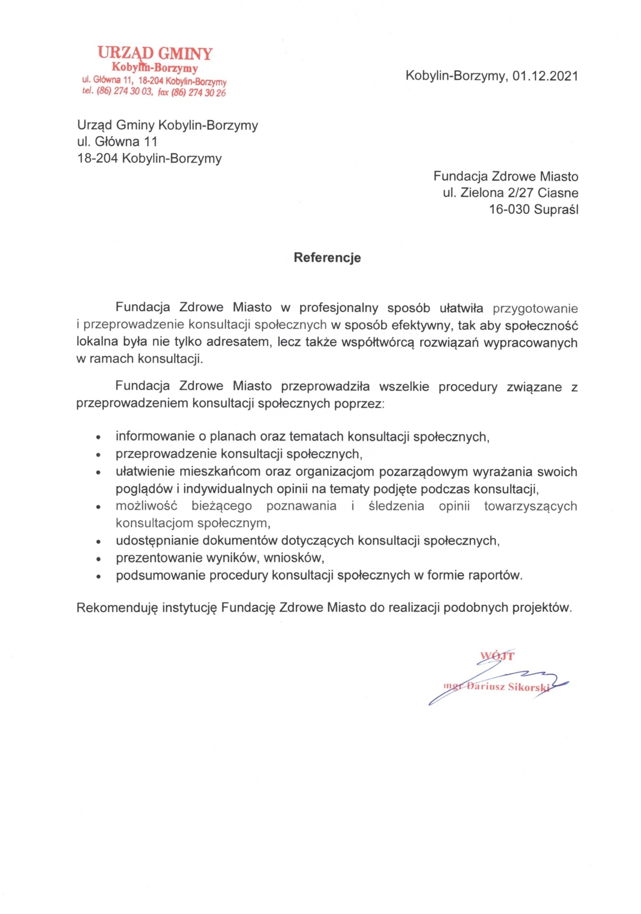
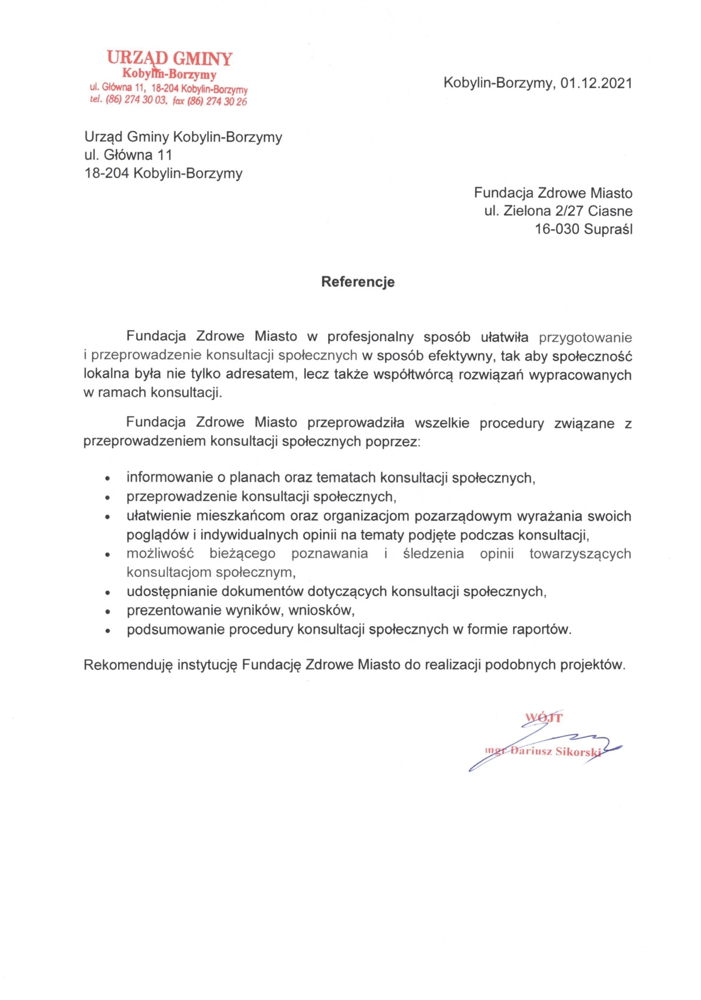

Referencje
-
JBB Bałdyga
- 
Urząd Gminy Kobylin-Borzymy
Urząd Miejski w Tykocinie
Lokalny Program rewitalizacji dla Gminy Sidra

Gmina Sidra - cykl szkoleń w ramach projektu "Ja w Internecie"
Fundacja M.I.A.S.T.O Białystok
Urząd Miejski w Michałowie - cykl szkoleń w ramach projektu "Ja w Internecie"

Urząd Gminy Zabłódów - cykl szkoleń w ramach projektu "Ja w Internecie"
Urząd Gminy w Gródku
Gabinet Lekarski Ewa Klonowska-Dziatkiewicz
Gin-Med. Kowalczyk i Partnerzy - "Ultrasonograficzne jako element diagnostyki prenatalnej"
Gin-Med. Kowalczyk i Partnerzy - "Ultrasonograficzne jako element diagnostyki prenatalnej cz. 2"
Gabinet Ginekologiczny Janusz Tomaszewski - "Ultrasonograficzne jako element diagnostyki prenatalnej"
Gabinet Ginekologiczny Janusz Tomaszewski - "Ultrasonograficzne jako element diagnostyki prenatalnej cz. 2"
M-QEST Marta Jaromińska - szkolenie "Neurolingwistyczne programowanie w sprzedaży"
REVITA - CENTRUM MEDYCZNE - szkolenie "Psychologia zdrowia dla personelu medycznego"
- 